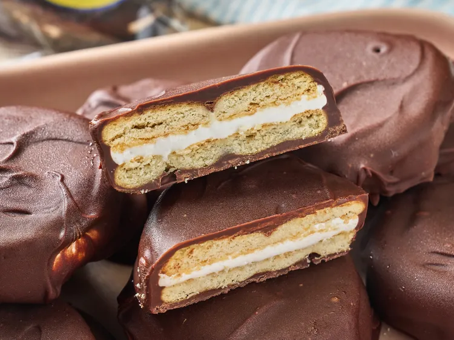

Mini Moon Pies

Description
These mini moon pies, with only 3 ingredients, take minutes to make, minutes to freeze, and then are dipped in melted chocolate.
They make a fun snack or party treat.
Ingredients
- 1 sleeve buttery round crackers, such as Ritz®
- 1 1/2 cups marshmallow fluff
- 2 cups semi sweet chocolate chips, melted
Steps
- Smear a teaspoon of marshmallow fluff onto a cracker and top it with another cracker like a sandwich. Repeat with remaining crackers.
- Place sandwiches onto a plate or baking sheet and place in the freezer for 5 to 10 minutes.
- Once the sandwiches have chilled, remove from the freezer and dip each one into the chocolate until completely coated. Place them on a wax paper lined baking sheet and place them in the refrigerator until chocolate has set or until ready to serve.
- Allow moon pies to come to room temperature before serving.
Home